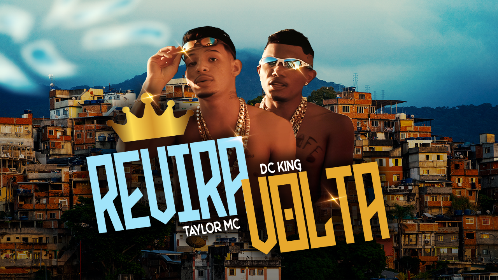

Sobre Nós - Scorpions Rap
A Scorpions Rap iniciou sua jornada no ano de 2010, com o primeiro integrante RX (Marcos Antônio) plantando as sementes de um sonho que aos poucos se tornaria uma referência no cenário musical. Com o passar do tempo, novos talentos se uniram ao grupo, como Lil Brown e Mac, trazendo suas próprias influências e estilos para a formação original.
Expansão para Pedro Leopoldo
Em 2018, a Scorpions Rap expandiu sua presença para a cidade de Pedro Leopoldo, marcando um novo capítulo em sua trajetória. Foi nesse período que Taylor Mc e Asaf, anteriormente conhecido como Mac, juntaram forças para fortalecer ainda mais o grupo. Com dedicação e paixão pela música, a Scorpions Rap produziu sucessos como "4 Conto Acústico PL 1" e "4 Conto Acústico PL 2", que abriram caminho para um crescimento constante e uma base de fãs leal.
Novos Talentos e Sucessos
A chegada de grandes nomes, como DC King, um renomado trapper da cidade, consolidou ainda mais a reputação da Scorpions Rap. Hoje, com grandes planos para o futuro, continuamos nossa ascensão rumo ao topo, sempre focados em inovar e elevar a qualidade de nossas produções.
Nossa Missão
A Scorpions Rap é mais do que um grupo musical; é uma família, uma comunidade de artistas dedicados a transformar sonhos em realidade e a deixar uma marca indelével no mundo do rap. Venha fazer parte dessa história conosco!